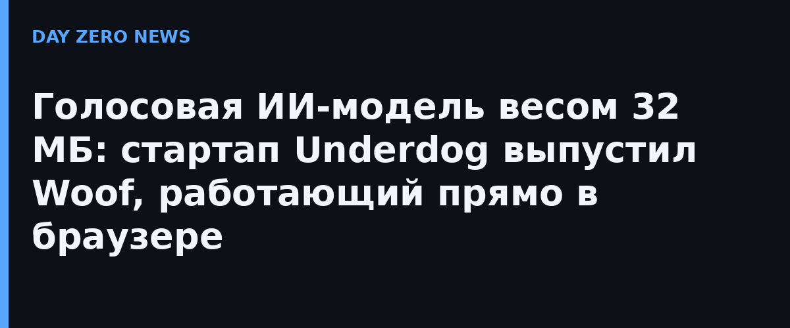

Пока крупные ИИ-компании соревнуются в размерах моделей, американский стартап Underdog идёт в противоположную сторону: его свежая модель текст-в-речь Woof занимает 31,7 МБ при 30,7 миллиона параметров. Это в десятки раз меньше облачных голосовых движков — и ровно поэтому модель запускается прямо в браузере на WebGPU, на обычном ноутбуке или телефоне, без подключения к сети.
Анонс упакован в браузерную игру Escape: комната с ретро-пишущей машинкой и ЭЛТ-монитором, где всё, что вы печатаете, озвучивает Woof, а крутилка-тюнер генерирует музыку. По сюжету надо сбежать от «назойливых облачных провайдеров» — прямой укол в сторону облачных моделей, которые уносят данные пользователя к себе. По данным компании, на одном потоке процессора ноутбука Woof работает в 18 раз быстрее реального времени, а вес модели на CPU-версии — около 40 МБ.
Вееса Woof открыты для скачивания по лицензии CC BY-NC 4.0 (бесплатно для некоммерческого использования). Это уже второй локальный релиз Underdog за месяц: раньше вышла Bark — модель распознавания речи размером 167 МБ, тоже рассчитанная на работу на устройстве. Основатель Сиджил Вэн говорит, что строит «приватный ИИ»: самые способные модели, по его оценке, переедут на устройства пользователей «в течение месяцев», а устройство пользователя должно владеть своими данными.
Малышка вроде Woof не заменит большие облачные модели, но закрывает нишу локальных ассистентов, офлайн-озвучки, подкастов и голосовых функций на слабых устройствах — там, где важен каждый мегабайт и где данные вообще не должны покидать машину. Архитектуру аудиодекодера Underdog построил на дизайн-наработках Mimi от французского фонда Kyutai.